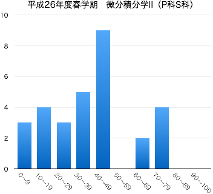

2014年度春学期 微分積分学 II Differential and Integral Calculus II
火2限 10:55-12:35 | 2-273教室 | 対象：ものづくり環境学科2年生 創造システム工学科2年生
担当：佐藤 弘康（hiroyasu [at] nit.ac.jp | W1棟204 | 0480-33-7972）
自然科学のみならず工学のさまざまな分野で、現象を表現・解析する手段として微分積分学の知識は欠かせない。 微分積分学の概念・計算技法を身につけるために、1変数関数を対象とした積分法について学習する。基礎的な計算技法に習熟するとともに、図形の面積・体積や曲線の長さへの応用について理解する。
| 第1回 | 4月 | 8日（火） | ガイダンス，1変数関数の微分法の復習 |
| 第2回 | 15日（火） | 不定積分の基本概念 第1章 §2.1 | |
| 第3回 | 22日（火） | 初等関数の原始関数 (1) 整式 第4章 §1.1 (p.113-116) | |
| 第4回 | 30日（水） | 初等関数の原始関数 (2) 指数関数・三角関数 第4章 §1.1 (p.116,117) 置換積分法 (1) 第4章 §2.1(p.121) |
|
| 第5回 | 5月 | 13日（火） | 置換積分法 (2) 第4章 §2.1(p.122,123) 第4章 §1.2 |
| 第6回 | 20日（火） | 部分積分法 第4章 §2.2 | |
| 第7回 | 27日（火） | 三角関数の不定積分 第4章 §3.1, 3.2 | |
| 第8回 | 6月 | 3日（火） | 部分分数分解，有理関数の不定積分 第4章 §4.1 第4章 §1.2 |
| 第9回 | 10日（火） | 急用により休講 web 補講「無理関数の不定積分」動画 スライド 第4章 §4.2 第4章 §1.2 | |
| 第10回 | 17日（火） | 定積分の定義とその基本性質，微分積分学の基本定理 第1章 §2.2 第5章 §1.1, 1.2, 1.3 定積分の計算 (1) 初等関数 第5章 §2.1 |
|
| (補講) | （6時限）小テスト（中間試験） 問題 解答 | ||
| (補講) | 18日（水） | （6時限）小テスト（中間試験） 問題 解答 | |
| 第11回 | 24日（火） | 定積分の計算 (2) 置換積分法・部分積分法 第5章 §2.2, 2.3 | |
| 第12回 | 7月 | 1日（火） | 定積分の計算 (3) 偶関数と奇関数 |
| 第13回 | 8日（火） | 広義積分 第5章 §3.1, 3.2 | |
| 第14回 | 15日（火） | 面積 第5章 §4.1 | |
| 29日（火） | 期末試験 (10:40 -- 11:40, 1-255教室) 問題 解答 |
|  |
|